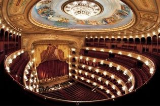
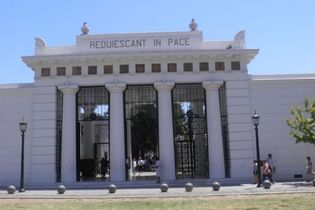

La Ciudad de Buenos Aires cuenta con muchos lugares para conocer y actividades que realizar.
A continuacion dejamos algunos de ellos

Teatro Colón
El Teatro Colón de la ciudad de Buenos Aires es considerado uno de los mejores teatros del mundo. Reconocido por su acústica y por el valor artístico de su construcción
Cementerio De Recoleta
El Cementerio de la Recoleta es un famoso cementerio de la ciudad de Buenos Aires, Argentina. Está ubicado en el barrio de Recoleta y contiene las tumbas de personas muy reconocidas.Se transformó en el primer cementerio público de la ciudad. Es uno de los atractivos turísticos más populares de la ciudad.El cementerio en sí es considerado Museo Histórico Nacional desde el año 1946.
Jardín Japones
El Jardín Japonés se construyó con el aporte y esfuerzo de la Colectividad Japonesa en el año 1967, como testimonio de la primera visita a la Argentina de un integrante de la Familia Imperial Japonesa. Este jardín es un emblema representativo de la relacion entre Argentina y Japón. Al Jardín, actualmente, se lo conoce mundialmente como el Jardín Japonés más grande fuera de Japón.
Centro Cultural Kirchner
El Centro Cultural Kirchner,es un espacio para artes plásticas, espectáculos musicales y exposiciones. Es el más importante en tamaño de América Latina. Su nombre rinde homenaje al expresidente argentino Néstor Kirchner. El centro es hasta la actualidad la mayor inversión en un proyecto cultural hecha en la Argentina en toda su historia.
Caminito
Caminito es un callejón, museo y un pasaje, de gran valor cultural y turístico, ubicado en el barrio de La Boca de la Ciudad de Buenos Aires. El lugar adquirió significado cultural debido a que inspiró la música del famoso tango "Caminito" (1926), compuesta por Juan de Dios Filiberto.
ESMA
La ESMA fue unos de los centros de detención mas importantes durante la ultima dictadura cívico militar. Hoy es un espacio abierto a la comunidad, ubicado en el barrio de Núñes